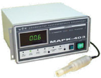

- Продукция
- Водоподготовка
- Кислородомер Марк-403
Анализатор растворённого кислорода МАРК-403

Анализатор растворенного кислорода МАРК-403 предназначен для непрерывного измерения растворённого кислорода водных сред и позволяет осуществлять непрерывный контроль водно-химических режимов на объектах теплоэнергетики, например, измерение кисорода в питательной воде паровых или водогрейных котлов.
Основные потребители: ТЭЦ, ГРЭС, АЭС, котельные, очистные сооружения, станции мониторинга состояния водных объектов.
Анализатор рассчитан на круглосуточную работу и может как проводить измерения от нескольких пробоотборников, расположенных рядом, так и непрерывное измерение в потоке от одного пробоотборника.
Анализатор значительно ускоряет и облегчает измерение растворённого кислорода в водных растворах по сравнению с реагентными методами.
Технические характеристики:
- Четыре диапазона измерения концентрации растворенного кислорода, мкг/дм3: 0...20, 0...200, 0...2000, 0...20000
- Параметры анализируемой среды:
- температура, ° С - от 0 до 70 (кратковременно до 100);
- давление, МПа не более 0.05;
- содержание солей, г/дм3 от 0 до 40
- pH от 4 до 12;
- Погрешность измерения не более ± (3 мкг/дм3 + 4% от измеряемой величины)
- Автоматическая термокомпенсация
- Простая и быстрая калибровка по воздуху
- Взаимозаменяемый датчик ДК-402М
- Удаление датчика от блока преобразовательного до 100 метров
- Габаритные размеры блока преобразовательного, мм 270х135х270
Комплект поставки:
- Блок преобразовательный
- Датчик ДК-402М с кабелем 5 м
- Модуль стабилизации водного потока МС-402М
- Комплект сменных элементов
- Электролит
Звоните: (495) XXX-XX-XX
Смотрите также: портативный кондуктометр-солемер МАРК-603.